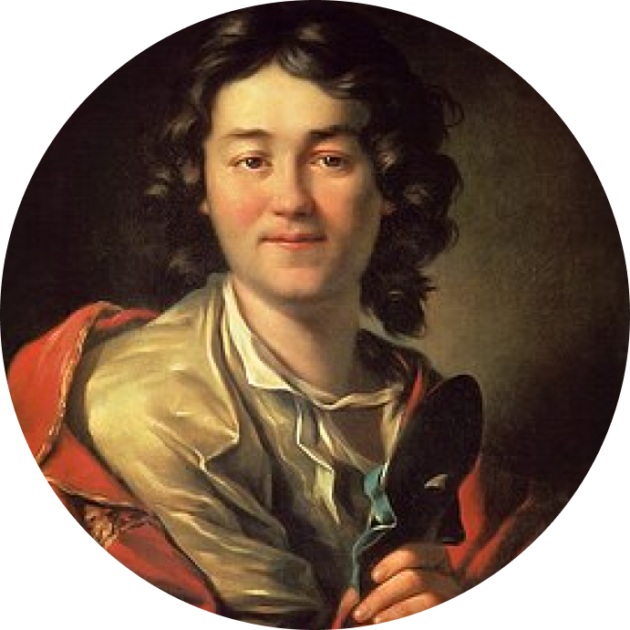

Годы жизни:
1729-1763
Фёдор Григорьевич Волков - (9 февраля 1729 - 4 апреля 1763) — русский театральный режиссёр и актёр, один из основоположников профессионального театра в России.
30 августа 1756 года был официально учреждён «Русский для представления трагедий и комедий театр». Здесь Волков занял ведущее положение «первого актёра».
1761 году после отставки Сумарокова Волков принял обязанности руководителя труппы.
Прославился в трагедийных ролях (Оскольд в трагедии А. П. Сумарокова «Семира»), но также имел успех и в комедиях.
Галлерея